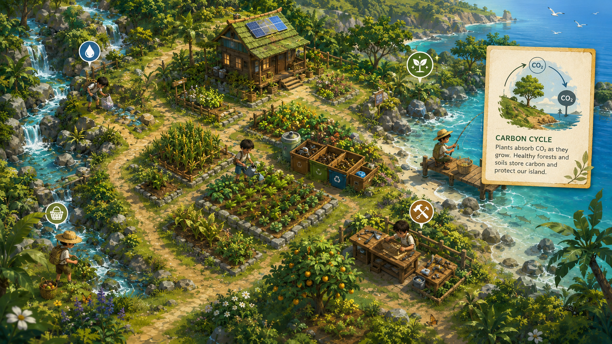

玩法與科普
讓玩家邊經營、
讓玩家邊經營、
邊理解環境知識
遊戲基底延續類《星露谷物語》的養成經營樂趣，但目標不是無止境擴張，而是讓玩家在生活經營、探索任務與環境修復之中，逐步學會節制、觀察與共生。

從生活建立開始，逐步學會節制與修復
玩家會在島上進行農耕、採集、釣魚、工藝品製作與房屋建設。每項活動都與環境狀態相連，若忽略土壤、水質或棲地狀況，後續收穫與資源都會受到影響。
生活建立
前期體驗
整理田地、種植作物、蒐集素材、建置堆肥區與回收站。
探索學習
中期體驗
在山林、溪流與海岸場景中，透過任務與知識卡理解自然規律。
共生取捨
後期體驗
面對資源過採、環境異常與修復選擇，思考短期利益與長期平衡。
核心玩法模組
- 農耕：播種、澆水、施肥、輪作、混作與堆肥。
- 採集：野菜、木材、石材與自然素材，採太多會降低再生率。
- 釣魚與溪流觀察：水質越好，魚群與生物多樣性越穩定。
- 工藝與建設：製作生活工具、工作台、倉庫與回收站。
- 地圖探索：透過不同場景任務理解環境問題與修復方法。

此圖可用來替代原本較偏文化展示的視覺，改成更明確的永續教育場景。
小遊戲不只是插曲，而是學習的關鍵節點
溪流垃圾清理
玩家清除垃圾、進行分類，學習污染對魚類、昆蟲與水質的影響。
資源承載量挑戰
透過限量採集或季節規劃，理解過度採收會讓自然恢復變慢。
巡守與安全通報
針對非法伐木、山老鼠或盜獵痕跡，以辨識、避險與通報為主，而非刺激對抗。
把科普知識做成好閱讀、好記憶的遊戲內容
知識卡會在玩家接觸相應場景時跳出，搭配簡明圖像與一句行動提示，降低說教感，提升可記憶性與實作連結。
知識卡主題
- 野外生存與安全避險
- 農耕知識與土壤照顧
- 碳循環與分解作用
- 垃圾污染與水域生態
- 棲地保護與生物多樣性
希望達成的效果
- 讓玩家知道「為什麼要這樣做」
- 把抽象知識連回生活行動
- 支撐工作坊前後測與問卷設計
- 讓遊戲與教育現場更容易對接
知識卡呈現建議
- 每則控制在 40–80 字，搭配圖像與關鍵詞。
- 除了說明概念，也附上一句「生活行動提醒」。
- 避免高壓考題式口吻，改採鼓勵探索與理解的語氣。
- 未來可延伸為工作坊講義或社群貼文內容。